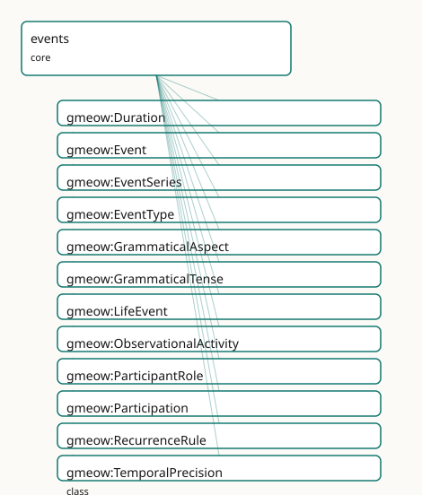

GMEOW Events Module
- IRI: https://blackcatinformatics.ca/gmeow/slices/events
- Tier: core
Group: core
What This Slice Covers
This slice owns 159 terms and contributes 269 mapping or projection rows. Use it when its terms match the native fact you want to preserve; use the linkage tables to see how those facts leave GMEOW for consumer vocabularies.
Dependencies
gmeow:slices/documentsgmeow:slices/kernelgmeow:slices/observationsgmeow:slices/placesgmeow:slices/provenancegmeow:slices/temporal
Consumers
Participationand life events across slices; the calendar slice; provenance activities.
Local Map

Examples
Wedding
- Source:
slices/core/events/examples/wedding.ttl - GMEOW terms:
gmeow:Event,gmeow:Participation,gmeow:Person,gmeow:Place,gmeow:eventLocation,gmeow:eventTemporalFrame,gmeow:eventTime,gmeow:eventType,gmeow:eventTypeMarriage,gmeow:hasParticipant - External prefixes:
xsd
# SPDX-FileCopyrightText: 2026 Blackcat Informatics® Inc. <paudley@blackcatinformatics.ca>
# SPDX-License-Identifier: CC-BY-4.0
#
# Worked example: an event on the four orthogonal axes . A wedding has a
# TYPE (eventTypeMarriage), a temporal placement carried in an EXPLICIT frame
# (P11: the instant is meaningless without its TemporalFrame), and a LOCATION —
# three independent axes. The fourth axis is participation: most attendees ride
# the flat gmeow:hasParticipant (the 80% case), but the principals and the
# officiant are promoted to reified gmeow:Participation relators so their ROLES
# are recorded — the reify-on-demand idiom shared with NameUsage.
@prefix gmeow: <https://blackcatinformatics.ca/gmeow/> .
@prefix ex: <https://blackcatinformatics.ca/gmeow/examples/events/> .
@prefix rdfs: <http://www.w3.org/2000/01/rdf-schema#> .
@prefix xsd: <http://www.w3.org/2001/XMLSchema#> .
ex:wedding a gmeow:Event ;
rdfs:label "the marriage of Alex and Sam"@en ;
gmeow:eventType gmeow:eventTypeMarriage ;
gmeow:eventTime "2026-06-20T15:00:00Z"^^xsd:dateTime ;
gmeow:eventTemporalFrame gmeow:temporalFrameUTCGregorian ;
gmeow:eventLocation ex:chapel ;
# Flat participation for the witnesses ONLY — no role/period/evidence needed.
# The principals and the officiant are instead reified below (with roles), so
# they are deliberately NOT repeated here: flat and reified never overlap.
gmeow:hasParticipant ex:witnessA , ex:witnessB .
ex:chapel a gmeow:Place ; gmeow:name "Rosewood Chapel"@en .
ex:alex a gmeow:Person ; gmeow:name "Alex Mercer"@en .
ex:sam a gmeow:Person ; gmeow:name "Sam Okonkwo"@en .
ex:officiant a gmeow:Person ; gmeow:name "Rev. Dana Pike"@en .
ex:witnessA a gmeow:Person ; gmeow:name "Jordan Vance"@en .
ex:witnessB a gmeow:Person ; gmeow:name "Priya Raman"@en .
# --- Reified participations: the two principals and the officiant, with roles.
# A withdrawn or disputed role would coexist as another Participation
# (displayable false, or standpoint-indexed) — never overwritten (P9/P10).
ex:partAlex a gmeow:Participation ;
gmeow:participationEvent ex:wedding ;
gmeow:participationParticipant ex:alex ;
gmeow:participationRole gmeow:roleParticipantPrincipal .
ex:partSam a gmeow:Participation ;
gmeow:participationEvent ex:wedding ;
gmeow:participationParticipant ex:sam ;
gmeow:participationRole gmeow:roleParticipantPrincipal .
ex:partOfficiant a gmeow:Participation ;
gmeow:participationEvent ex:wedding ;
gmeow:participationParticipant ex:officiant ;
gmeow:participationRole gmeow:roleOfficiant .
Terms
Classes
| Term | Label | Definition |
|---|---|---|
gmeow:Duration |
Duration | A length of time as a quantity, independent of when it occurs — the running time of an event, a gap, a recurrence period. Carries an xsd:duration via gmeow:dur... |
gmeow:Event |
Event | A temporal occurrence in which entities participate in roles, over possibly fuzzy time, at possibly several locations, asserted by possibly conflicting sources... |
gmeow:EventSeries |
Event Series | A recurrence or schedule that issues a series of concrete gmeow:Event occurrences — a weekly standup, an annual conference. Distinct from any one occurrence; t... |
gmeow:EventType |
Event Type | The kind of an event — a VALUE, never a gmeow:Event subclass. The set is open; a kind not among the seed individuals is a FRESH gmeow:EventType individual carr... |
gmeow:GrammaticalAspect |
Grammatical Aspect | The grammatical aspect of an event mention in text — a VALUE vocabulary for ISO-TimeML interoperability (perfective / progressive / perfective-progressive / no... |
gmeow:GrammaticalTense |
Grammatical Tense | The grammatical tense of an event mention in text — a VALUE vocabulary for ISO-TimeML interoperability (past / present / future / none). Describes the linguist... |
gmeow:LifeEvent |
Life Event | An event in the life of a person or family — a birth, death, marriage, christening, name change, and so on — to which sources and confidence can be attached. A... |
gmeow:ObservationalActivity |
Observational Activity | An activity whose primary purpose is to produce observations — a scientific survey, census, archaeological excavation, clinical trial, code review, audit, or a... |
gmeow:ParticipantRole |
Participant Role | The role an entity plays in an event — a VALUE, never a participation subproperty. The set is open; a role not among the seeds is a FRESH gmeow:ParticipantRole... |
gmeow:Participation |
Participation | A reified participation of an entity in an event, in a role, over a period, on some evidence — the same relator idiom as gmeow:NameUsage. Mint one Participatio... |
gmeow:RecurrenceRule |
Recurrence Rule | A rule by which a gmeow:EventSeries repeats — weekly, every-first-Monday, annually. Carries an RFC 5545 RRULE string via gmeow:recurrenceRuleText. (= ISO-TimeM... |
gmeow:TemporalPrecision |
Temporal Precision | The granularity to which an event's time is known — day, month, year, decade, or circa. A value carried by gmeow:temporalPrecision; pairs with gmeow:earliestSt... |
Properties
| Term | Label | Definition |
|---|---|---|
gmeow:after |
after | Allen AFTER: this event begins strictly after the related event ends; the transitive inverse of gmeow:before. (= time:intervalAfter; TimeML AFTER; TEO after.) |
gmeow:before |
before | Allen BEFORE: this event ends strictly before the related event begins (a gap between them). Transitive. Inverse of gmeow:after. (= time:intervalBefore over th... |
gmeow:coincidesWith |
coincides with | Allen EQUALS: this event and the related event share the same temporal extent (co-temporal). Symmetric and transitive. Asserts TEMPORAL simultaneity only, neve... |
gmeow:contains |
temporally contains | Allen CONTAINS: this event's extent strictly contains the related event's extent; the transitive inverse of gmeow:during. A TEMPORAL relation only — not spatia... |
gmeow:durationValue |
duration value | The length of a gmeow:Duration as an xsd:duration literal (ISO 8601, e.g. P1Y2M / PT3H). DL-clean; the TEO hasNormalizedDuration 0Y0M0W0D0H0m0s string is a pro... |
gmeow:during |
during | Allen DURING: this event's extent falls strictly within the related event's extent (both endpoints interior). Transitive. Inverse of gmeow:contains. Distinct f... |
gmeow:earliestStart |
earliest start | The earliest instant at which an event could have started — the lower bound of a fuzzy / approximate date (xsd:dateTime). Pairs with gmeow:latestEnd and a gmeo... |
gmeow:eventAspect |
event aspect | The grammatical aspect of a textual mention of the event (ISO-TimeML EVENT @aspect). Annotation-layer only; orthogonal to the event's actual temporal placement. |
gmeow:eventFromLocation |
event from-location | The origin of a movement event — where a migration, move, journey, or relocation departed from. A specialisation of gmeow:eventLocation (the origin IS a locati... |
gmeow:eventInterval |
event interval | The crisp, known time interval over which an event occurred (reuses the temporal module's gmeow:TimeInterval). For a point-like occurrence use gmeow:eventTime;... |
gmeow:eventLocation |
event location | A location at which an event occurred — a geographic gmeow:Place, a gmeow:VirtualLocation, or any other gmeow:Location (the full superset). Non-functional: an... |
gmeow:eventObservation |
event observation | An observation made during or about an event. Inverse of gmeow:observationEvent (observations module). Non-functional: an event may have many observations, and... |
gmeow:eventSpacetime |
event spacetime | A spacetime slice of an event, expressed as a gmeow:LocationState that carries location, time interval or instant, pose, and optional velocity relative to an e... |
gmeow:eventTemporalFrame |
event temporal frame | The temporal frame in which the event's date/interval is expressed — explicit for non-default frames (Principle 11). |
gmeow:eventTense |
event tense | The grammatical tense of a textual mention of the event (ISO-TimeML EVENT @tense). Annotation-layer only; MUST NOT be inferred from, or used to infer, the even... |
gmeow:eventTime |
event time | The instant at which a point-like event occurred (xsd:dateTime — DL-clean, never xsd:date). Replaces the former free-text gmeow:eventDate. Non-functional: comp... |
gmeow:eventToLocation |
event to-location | The destination of a movement event — where a migration, move, journey, or relocation arrived. A specialisation of gmeow:eventLocation, pairing with gmeow:even... |
gmeow:eventTrajectory |
event trajectory | The trajectory of a moving event — a parade, march, migration, or procession — describing its continuous space-time path. Reuses the gmeow:Trajectory facility... |
gmeow:eventType |
event type | The kind(s) of an event, drawn from the open gmeow:EventType value vocabulary. Non-functional: an occurrence may carry several types (a wedding that is also a... |
gmeow:finishedBy |
finished by | Allen FINISHED-BY: inverse of gmeow:finishes. (= time:intervalFinishedBy; TimeML ENDED_BY; TEO finishedBy.) |
gmeow:finishes |
finishes | Allen FINISHES: this event and the related event end together, and this one began later (it is a final sub-span). NOT transitive. Inverse of gmeow:finishedBy.... |
gmeow:generatedObservation |
generated observation | Relates an observational activity to an observation it generated as a first-class output. The inverse direction (Observation → Activity) is covered by the gene... |
gmeow:hasDuration |
has duration | Relates an event to its duration (a gmeow:Duration). Distinct from gmeow:eventInterval (which anchors the event in time); a duration is a length only. |
gmeow:hasParticipant |
has participant | An agent that took part in an event — the flat 80%-case shortcut. Non-functional. Promote to a gmeow:Participation node when the role, period, confidence, or e... |
gmeow:hasRecurrenceRule |
has recurrence rule | Relates an event series to the recurrence rule by which it repeats. |
gmeow:hasSubEvent |
has sub-event | Relates an event to a constituent sub-event; the transitive inverse of gmeow:subEventOf. |
gmeow:latestEnd |
latest end | The latest instant by which an event must have ended — the upper bound of a fuzzy / approximate date (xsd:dateTime). Pairs with gmeow:earliestStart and a gmeow... |
gmeow:meets |
meets | Allen MEETS: this event ends exactly when the related event begins (no gap, no overlap). NOT transitive. Inverse of gmeow:metBy. (= time:intervalMeets; TimeML... |
gmeow:metBy |
met by | Allen MET-BY: this event begins exactly when the related event ends; inverse of gmeow:meets. (= time:intervalMetBy; TimeML IAFTER; TEO metBy.) |
gmeow:occurrenceOfSeries |
occurrence of series | Relates a concrete event occurrence to the series that issued it; the inverse of gmeow:seriesOccurrence. |
gmeow:overlappedBy |
overlapped by | Allen OVERLAPPED-BY: inverse of gmeow:overlaps. (= time:intervalOverlappedBy; TEO overlappedBy.) |
gmeow:overlaps |
overlaps | Allen OVERLAPS: this event begins before, and ends during, the related event (their extents partially overlap). NOT transitive. Inverse of gmeow:overlappedBy.... |
gmeow:participationEvent |
participation event | The event a participation is part of (functional — one event per participation). |
gmeow:participationInterval |
participation interval | The time interval over which the participation held. (A relator carries its period this way — matching usageInterval / relationshipInterval — rather than via d... |
gmeow:participationParticipant |
participation participant | The entity that took part in the event in this participation. Range is gmeow:Entity (not only Agent) to admit non-agent participants — a document signed, a pla... |
gmeow:participationRole |
participation role | The role(s) the participant played, drawn from the open gmeow:ParticipantRole value vocabulary. NON-FUNCTIONAL — mirroring gmeow:eventType: a participation may... |
gmeow:recurrenceRuleText |
recurrence rule text | The recurrence rule as an RFC 5545 RRULE string (e.g. FREQ=WEEKLY;BYDAY=MO). Projected directly to iCalendar RRULE; a SET-typed TIMEX3 in ISO-TimeML. |
gmeow:seriesOccurrence |
series occurrence | Relates an event series to one of the concrete event occurrences it issues. |
gmeow:startedBy |
started by | Allen STARTED-BY: inverse of gmeow:starts. (= time:intervalStartedBy; TimeML BEGUN_BY; TEO startedBy.) |
gmeow:starts |
starts | Allen STARTS: this event and the related event begin together, and this one ends first (it is an initial sub-span). NOT transitive. Inverse of gmeow:startedBy.... |
gmeow:subEventOf |
sub-event of | Relates an event to a larger event it is part of — a talk within a session within a conference. Transitive: a part of a part is a part (CIDOC-CRM P9 consists o... |
gmeow:temporalCoverage |
temporal coverage | The temporal extent or scope of a creative work. |
gmeow:temporalPrecision |
temporal precision | The granularity to which an event's time is known — a gmeow:TemporalPrecision value (day / month / year / decade / circa). Makes the determinacy of a date expl... |
Individuals
| Term | Label | Definition |
|---|---|---|
gmeow:aspectNone |
none | ISO-TimeML aspect NONE. |
gmeow:aspectPerfective |
perfective | ISO-TimeML aspect PERFECTIVE. |
gmeow:aspectPerfectiveProgressive |
perfective-progressive | ISO-TimeML aspect PERFECTIVE_PROGRESSIVE. |
gmeow:aspectProgressive |
progressive | ISO-TimeML aspect PROGRESSIVE. |
gmeow:eventTypeAcquisition |
acquisition | The event of one organization acquiring control of another organization. |
gmeow:eventTypeAdoption |
adoption | The adoption of a person. |
gmeow:eventTypeAnnulment |
annulment | The annulment of a marriage. |
gmeow:eventTypeAudit |
audit | A formal audit or inspection — an observational activity that produces evaluative observations. |
gmeow:eventTypeBaptism |
baptism | A baptism. |
gmeow:eventTypeBarMitzvah |
bar mitzvah | A bar mitzvah. |
gmeow:eventTypeBatMitzvah |
bat mitzvah | A bat mitzvah. |
gmeow:eventTypeBirth |
birth | The event of a person being born. |
gmeow:eventTypeBurial |
burial | The burial of a deceased person. |
gmeow:eventTypeCensus |
census | A person's enumeration in a census. |
gmeow:eventTypeCensusActivity |
census activity | A census as a systematic data-collection activity — an observational activity that produces population observations. Distinguished from gmeow:eventTypeCensus,... |
gmeow:eventTypeChristening |
christening | A christening or naming ceremony. |
gmeow:eventTypeClinicalTrial |
clinical trial | A clinical trial or structured medical investigation — an observational activity that produces health-outcome observations. |
gmeow:eventTypeCodeReview |
code review | The event of reviewing code changes for quality, correctness, and policy compliance. |
gmeow:eventTypeCommit |
commit | The event of recording a version-control commit — a content-addressed snapshot of a codebase. |
gmeow:eventTypeConcert |
concert | A public musical performance, typically before an audience. |
gmeow:eventTypeConfirmation |
confirmation | A religious confirmation. |
gmeow:eventTypeCreation |
creation | The event of an entity coming into existence — the universal form of birth (person), founding (organization), minting (currency), or realization (reference fra... |
gmeow:eventTypeCremation |
cremation | The cremation of a deceased person. |
gmeow:eventTypeDJSet |
DJ set | A performance in which a DJ selects and plays recorded music. |
gmeow:eventTypeDeath |
death | The event of a person's death. |
gmeow:eventTypeDestruction |
destruction | The event of an entity ceasing to exist — the universal form of death (person), dissolution (organization), destruction (place), or retirement (frame, software... |
gmeow:eventTypeDissolution |
dissolution | The formal dissolution of a structured entity — an organization, agreement, polity, or marriage. Distinct from general destruction in carrying legal or procedu... |
gmeow:eventTypeDivorce |
divorce | The legal dissolution of a marriage. |
gmeow:eventTypeEmigration |
emigration | A person's emigration from a country. |
gmeow:eventTypeEngagement |
engagement | A betrothal or engagement to marry. |
gmeow:eventTypeExcavation |
excavation | An archaeological excavation — a structured observational activity that produces stratigraphic and spatial observations. |
gmeow:eventTypeExpressionCreation |
expression creation | The event of realizing a work in a specific language, script, notation, or arrangement — the act that brings a gmeow:Expression into existence. ≈ LRMoo F28 Exp... |
gmeow:eventTypeFirstCommunion |
first communion | A first communion. |
gmeow:eventTypeFuneral |
funeral | A funeral or memorial service. |
gmeow:eventTypeGraduation |
graduation | Graduation from an educational program. |
gmeow:eventTypeHiring |
hiring | The event of an agent beginning employment with an organization. |
gmeow:eventTypeImageAnnotation |
image annotation | The act of adding regions, labels, scene-graph edges, or other structured metadata to an image. Produces gmeow:ImageRegion and gmeow:SceneGraphEdge instances. |
gmeow:eventTypeImageCapture |
image capture | The act of capturing a still image — photography, screenshot, or frame grab. Brings a gmeow:MediaObject into existence. ≈ CIDOC-CRM E12 Production scoped to a... |
gmeow:eventTypeImageProcessing |
image processing | The act of editing, filtering, colour-correcting, or otherwise transforming a digital image. The output is a derivative gmeow:MediaObject linked by gmeow:wasDe... |
gmeow:eventTypeImageScanning |
image scanning | The act of digitizing a physical photograph, document, or artwork via scanner or camera reprography. Produces a gmeow:MediaObject from a physical source. |
gmeow:eventTypeImmigration |
immigration | A person's immigration into a country. |
gmeow:eventTypeJamSession |
jam session | An informal musical performance, often improvisatory, by multiple participants. |
gmeow:eventTypeManifestationProduction |
manifestation production | The event of producing a concrete edition, format, or release — the act that brings a gmeow:Manifestation into existence (printing, pressing, digital publishin... |
gmeow:eventTypeMarriage |
marriage | The event of two persons entering into marriage. |
gmeow:eventTypeMerge |
merge | The event of merging one branch of development into another. |
gmeow:eventTypeMerger |
merger | The event of two or more organizations combining into one or more successor organizations. |
gmeow:eventTypeMigration |
migration | A relocation of people from one place to another — a family's move, an internal migration, or a multi-generational flow. The general movement event (schema:Mov... |
gmeow:eventTypeMilitaryService |
military service | A period of military service. |
gmeow:eventTypeMusicalPerformance |
musical performance | A performance of music — the central event type for the music extension. Co-typed with more specific values such as concert, recording session, or take as need... |
gmeow:eventTypeNameChange |
name change | A formal change of name. |
gmeow:eventTypeNaturalization |
naturalization | The grant of citizenship by naturalization. |
gmeow:eventTypeOrdination |
ordination | Ordination into religious office. |
gmeow:eventTypeOverdub |
overdub | A take recorded over or alongside existing recorded material. |
gmeow:eventTypeProbate |
probate | The probate of an estate. |
gmeow:eventTypePromotion |
promotion | The event of an agent advancing in rank, role, or compensation within an organization. |
gmeow:eventTypePush |
push | The event of pushing commits to a remote repository. |
gmeow:eventTypeRecordingSession |
recording session | A session at which one or more recordings are captured. |
gmeow:eventTypeRehearsal |
rehearsal | A practice or preparation event for a musical performance. |
gmeow:eventTypeRelease |
release | The event of publishing a software release — producing a versioned product with associated artifacts. |
gmeow:eventTypeRename |
rename | The event of an organization changing its name, while remaining the same legal entity. Reuses the names module for the new name plus a temporal tenure (e.g. Fa... |
gmeow:eventTypeResidence |
residence | A person's residence at a place over a period. |
gmeow:eventTypeResignation |
resignation | The event of an agent voluntarily ending employment. |
gmeow:eventTypeRetirement |
retirement | Retirement from working life. |
gmeow:eventTypeSeparation |
separation | A legal or informal marital separation. |
gmeow:eventTypeSoundcheck |
soundcheck | A pre-performance event for checking sound and equipment. |
gmeow:eventTypeSpinOff |
spin-off | The event of a part of an organization breaking away to form a new, independent organization. |
gmeow:eventTypeSplit |
split | The event of one organization dividing into two or more successor organizations. |
gmeow:eventTypeSupersession |
supersession | The event of one entity replacing another — a transformation, merger, or reorganization where a predecessor entity ceases and a successor entity begins (e.g. S... |
gmeow:eventTypeSurvey |
survey | A systematic survey or data-collection activity whose purpose is to produce observations. |
gmeow:eventTypeTake |
take | A single recorded attempt or capture during a recording session. |
gmeow:eventTypeTermination |
termination | The event of an agent's employment being ended by the organization. |
gmeow:eventTypeTransfer |
transfer | The event of an agent moving from one organizational unit or location to another. |
gmeow:eventTypeTransmission |
transmission | An oral-tradition teaching event in which musical knowledge is passed from one agent to another (see). |
gmeow:eventTypeWill |
will | The making of a will. |
gmeow:eventTypeWorkConception |
work conception | The event of conceiving an abstract intellectual or artistic work — the creative act that brings a gmeow:Work into existence. ≈ LRMoo F27 / CIDOC-CRM E65 Creat... |
gmeow:precisionCirca |
circa | The event's time is approximate (circa) — bounded by gmeow:earliestStart / gmeow:latestEnd. |
gmeow:precisionDay |
day | The event's time is known to the day. |
gmeow:precisionDecade |
decade | The event's time is known only to the decade. |
gmeow:precisionMonth |
month | The event's time is known to the month. |
gmeow:precisionYear |
year | The event's time is known to the year. |
gmeow:roleAccompanist |
accompanist | A performer who accompanies a soloist or ensemble. |
gmeow:roleAgent |
agent | An agent that carried out or caused the event (the active party). |
gmeow:roleAttendee |
attendee | An agent who attended the event. |
gmeow:roleBeneficiary |
beneficiary | An entity that benefited from the event. |
gmeow:roleConductor |
conductor | An agent who conducted a musical performance. Also a ContributionRole (declared in creative-works.ttl) — one concept, one IRI (Principle 5). |
gmeow:roleEmployee |
employee | The agent employed in an employment event. |
gmeow:roleEmployer |
employer | The organization employing in an employment event. |
gmeow:roleEnsembleMember |
ensemble member | A performer participating as a member of a musical ensemble. |
gmeow:roleImproviser |
improviser | A performer whose participation is primarily improvisatory. |
gmeow:roleLearner |
learner | An agent who receives musical knowledge in an oral-tradition teaching event (see). |
gmeow:roleOfficiant |
officiant | A person who officiated at the event. Generalizes the former gmeow:hasOfficiant. |
gmeow:roleOrganizer |
organizer | An agent that organized or convened the event. |
gmeow:roleParticipantPrincipal |
principal / subject | The entity an event is principally about (e.g. the child in a birth, the deceased in a death). Generalizes the former gmeow:hasPrincipal. |
gmeow:rolePerformer |
performer | An agent who performed at the event. Also a ContributionRole (declared in creative-works.ttl) — one concept, one IRI (Principle 5). |
gmeow:roleProducer |
producer | An agent who produced a performance or recording. Also a ContributionRole (declared in creative-works.ttl) — one concept, one IRI (Principle 5). |
gmeow:roleSessionMusician |
session musician | A musician hired to perform in a recording session. |
gmeow:roleSoloist |
soloist | A performer featured as a soloist in a musical performance. |
gmeow:roleTransmitter |
transmitter | An agent who transmits musical knowledge in an oral-tradition teaching event (see). |
gmeow:roleVictim |
victim | An entity harmed by the event — distinct from, and never inferred from, any other role. |
gmeow:roleWitness |
witness | A person who witnessed the event. Generalizes the former gmeow:hasWitness. |
gmeow:tenseFuture |
future | ISO-TimeML tense FUTURE. |
gmeow:tenseNone |
none | ISO-TimeML tense NONE (untensed / nominal mention). |
gmeow:tensePast |
past | ISO-TimeML tense PAST. |
gmeow:tensePresent |
present | ISO-TimeML tense PRESENT. |
Linkages
- Rows: 269
- Projection profiles:
crmarchaeo,dcterms,gedcom,ical,iptc,oai_dc,owl-time,prov,schema-org,schema-org-schedule,vcard - External vocabularies:
bbc,bio,crm,crmarc,crmgeo,dc,dcmitype,dcterms,gedcom,gx,ical,iptc,lode,lrmoo,obi,org,prov,qb,rdf,schema,sem,teo,time,vcard,wd,wdt
| Source | Kind | Profile | Predicate/Relation | Target | Evidence |
|---|---|---|---|---|---|
gmeow:Duration |
equivalence | - |
skos:closeMatch | schema:Duration | gmeow-events.sssom.tsv; gmeow:eqEvents119; confidence 0.85 |
gmeow:Duration |
equivalence | - |
skos:closeMatch | teo:Duration | gmeow-events.sssom.tsv; gmeow:eqEvents120; confidence 0.85 |
gmeow:Duration |
equivalence | - |
skos:closeMatch | time:Duration | gmeow-events.sssom.tsv; gmeow:eqEvents118; confidence 0.85 |
gmeow:Event |
equivalence | - |
skos:relatedMatch | bbc:NewsEvent | gmeow-standpoint.sssom.tsv; gmeow:eqStandpoint019; confidence 0.45 |
gmeow:Event |
equivalence | - |
skos:closeMatch | crm:E5_Event | gmeow-events.sssom.tsv; gmeow:eqEvents002; confidence 0.9 |
gmeow:Event |
equivalence | - |
skos:closeMatch | dcmitype:Event | gmeow-dublin-core.sssom.tsv; gmeow:eqDcType007; confidence 0.85 |
gmeow:Event |
equivalence | - |
skos:relatedMatch | ical:Vevent | gmeow-events.sssom.tsv; gmeow:eqEvents006; confidence 0.5 |
gmeow:Event |
equivalence | - |
skos:closeMatch | lode:Event | gmeow-events.sssom.tsv; gmeow:eqEvents004; confidence 0.85 |
gmeow:Event |
equivalence | - |
rdfs:subClassOf | org:ChangeEvent | gmeow-classes.sssom.tsv; gmeow:eqClasses051; confidence 0.9 |
gmeow:Event |
equivalence | - |
skos:relatedMatch | prov:Activity | gmeow-deception.sssom.tsv; gmeow:eqDeception003; confidence 0.4 |
gmeow:Event |
equivalence | - |
skos:relatedMatch | prov:Activity | gmeow-events.sssom.tsv; gmeow:eqEvents003; confidence 0.5 |
gmeow:Event |
equivalence | - |
skos:closeMatch | schema:Event | gmeow-events.sssom.tsv; gmeow:eqEvents001; confidence 0.9 |
gmeow:Event |
equivalence | - |
skos:closeMatch | sem:Event | gmeow-events.sssom.tsv; gmeow:eqEvents005; confidence 0.85 |
gmeow:Event |
equivalence | - |
skos:relatedMatch | wd:Q1656682 | gmeow-events.sssom.tsv; gmeow:eqEvents007; confidence 0.6 |
gmeow:EventSeries |
equivalence | - |
skos:closeMatch | schema:EventSeries | gmeow-events.sssom.tsv; gmeow:eqEvents010; confidence 0.85 |
gmeow:LifeEvent |
equivalence | - |
skos:closeMatch | wd:Q2400985 | gmeow-wikidata.sssom.tsv; gmeow:eqWikidata036; confidence 0.8 |
gmeow:ObservationalActivity |
equivalence | - |
skos:closeMatch | crm:E13_Attribute_Assignment | gmeow-events.sssom.tsv; gmeow:eqEvents131; confidence 0.85 |
gmeow:ObservationalActivity |
equivalence | - |
skos:relatedMatch | crmarc:A1_Excavation_Process_Unit | gmeow-observations.sssom.tsv; gmeow:eqObs060; confidence 0.75 |
gmeow:ObservationalActivity |
equivalence | - |
skos:relatedMatch | iptc:NewsMessage | gmeow-observations.sssom.tsv; gmeow:eqObs070; confidence 0.7 |
gmeow:ObservationalActivity |
equivalence | - |
skos:closeMatch | obi:0000011 | gmeow-observations.sssom.tsv; gmeow:eqObs056; confidence 0.8 |
gmeow:ObservationalActivity |
equivalence | - |
skos:closeMatch | prov:Activity | gmeow-events.sssom.tsv; gmeow:eqEvents132; confidence 0.9 |
gmeow:ObservationalActivity |
equivalence | - |
skos:relatedMatch | qb:DataSet | gmeow-observations.sssom.tsv; gmeow:eqObs058; confidence 0.6 |
gmeow:ObservationalActivity |
equivalence | - |
skos:closeMatch | schema:Action | gmeow-events.sssom.tsv; gmeow:eqEvents133; confidence 0.75 |
gmeow:ParticipantRole |
equivalence | - |
skos:relatedMatch | sem:RoleType | gmeow-events.sssom.tsv; gmeow:eqEvents033; confidence 0.55 |
| ... | ... | ... | ... | ... | 245 more rows |
Guide
Events — occurrences, participation, and the four orthogonal axes
Slice:
https://blackcatinformatics.ca/gmeow/slices/events· tier: core The universal occurrence: entities participate in roles, over possibly fuzzy time, at possibly several places, per possibly conflicting sources.
A GMEOW event is a temporal occurrence in which entities participate in roles, over
possibly fuzzy time, at possibly several locations, asserted by possibly
conflicting sources. The slice supersets schema.org Event, CIDOC-CRM E5/E7/E92,
OWL-Time, PROV-O Activity, iCalendar VEVENT, LODE, SEM, and Wikidata by reference
(Principle 5), and absorbed the former genealogy event hierarchy (Principle 6):
thirty-odd LifeEvent subclasses and role subproperties became value individuals.
The no-mess rules. Type is a value, not a class — one gmeow:Event class, kinds in
an open value vocabulary (Principle 9, no overtyping). Role is a value on a relator,
never a subproperty. Four orthogonal axes — eventType ⟂ participationRole ⟂
temporal ⟂ location — with no inferential bridge. Flat-first, reify on demand —
gmeow:hasParticipant for the 80 % case, gmeow:Participation when role, period,
confidence, or evidence matters. Co-equal conflicting claims coexist — no primary
date; corrections use gmeow:displayable false, never deletion (Principle 10).
DL-clean time (Principle 3) — base triples are xsd:dateTime, never xsd:date.
The occurrence and its kind
gmeow:Event
The universal occurrence — gmeow:Activity (provenance) and gmeow:LifeEvent
re-parent onto it, so it is the genuine top event of the model. Declares
gmeow:requiresFrame gmeow:eventTemporalFrame at warning severity (Principle 11).
gmeow:eventType · gmeow:EventType
The kind of an occurrence as an open value vocabulary — birth, marriage, merger,
commit, image capture, expression creation — seeded from BIO, GEDCOM X, LRMoo, and
CIDOC-CRM. Non-functional by design: one occurrence may be both a marriage and a
religious rite, and a birth is also a gmeow:eventTypeCreation (the lifecycle hook).
An unforeseen kind is a fresh labelled individual, never a new class (Principle 9).
gmeow:LifeEvent
A thin, person-scoped phase of Event — not a type taxonomy: the specific kind stays a
value (gmeow:eventTypeBirth, …). It is the seam joining the names module to the event
spine: gmeow:conferredByEvent ranges over it.
Participation (the centerpiece relator)
gmeow:Participation
The reified, time-scoped, evidence-bearing fact that an entity took part in an event
in a role — the NameUsage/IdentityFacet idiom, one per (event, participant, role)
tuple. A disputed role is several standpoint-indexed Participations, none privileged; a
withdrawn one keeps gmeow:displayable false. EL axioms require some event and
participant; closed-world cardinality is SHACL's.
gmeow:participationEvent · gmeow:participationParticipant · gmeow:participationRole · gmeow:participationInterval
The relator's posts: exactly one event (functional); one or more participants (range
gmeow:Entity, not just Agent — a document signed, a place visited); zero or more
roles (non-functional, mirroring eventType — competing role claims coexist via
gmeow:accordingTo); and an optional interval over which the participation held.
gmeow:hasParticipant
The flat 80 %-case shortcut, Event → Agent. gmeow:pairsWith gmeow:Participation
(machine-readable, promote the moment role, period, confidence, or
evidence must be recorded — the hasMet/InterpersonalRelationship duality.
gmeow:ParticipantRole
The open role vocabulary: principal/subject, organizer, attendee, performer, officiant, witness, victim, agent, beneficiary, employee, employer. A role not among the seeds is a fresh individual — never a new participation subproperty.
Time, fuzziness, and place
gmeow:eventTime · gmeow:eventInterval · gmeow:earliestStart · gmeow:latestEnd · gmeow:temporalPrecision
The temporal axis, three honest shapes: a point event uses eventTime
(xsd:dateTime); a crisp span uses eventInterval (the temporal slice's
TimeInterval); a fuzzy date uses the earliestStart/latestEnd bounds plus a
gmeow:TemporalPrecision value (day/month/year/decade/circa) — uncertainty modelled,
not smuggled into a string. All non-functional: competing standpoint-indexed dates
coexist, confidence-weighted, annotated by the four statement clocks (temporal slice).
gmeow:eventLocation · gmeow:eventTrajectory · gmeow:eventSpacetime
The spatial axis: one or more gmeow:Location values (geographic or virtual — a
property chain lifts an event to every containing location); a gmeow:Trajectory for
moving events; and gmeow:LocationState spacetime slices carrying pose and velocity
relative to an explicit frame (Principle 11).
gmeow:eventFromLocation · gmeow:eventToLocation
The endpoint pair for movement events — migrations, moves, journeys, relocations.
Both are specialisations of gmeow:eventLocation (an origin or destination IS a
location of the event, so plain location consumers keep working), and together they
are the discrete sibling of the continuous gmeow:eventTrajectory. A movement event
with one known endpoint carries just that endpoint. With gmeow:eventTypeMigration
(or immigration/emigration) this is the canonical home of relocation history; the
schema.org projection derives schema:MoveAction + fromLocation/toLocation from
exactly this shape.
gmeow:subEventOf · gmeow:hasSubEvent
Event mereology — conference → session → talk — transitive specializations of the
universal partOf/hasPart spine, kept out of all cardinality axioms to preserve
OWL 2 DL regularity. Mereological, not temporal: containment in time is
gmeow:during/gmeow:contains.
gmeow:before · gmeow:after · gmeow:coincidesWith (the event-level Allen family)
Thirteen qualitative event-event temporal relations (meets/metBy,
overlaps/overlappedBy, starts/startedBy, during/contains,
finishes/finishedBy complete the set) — the TimeML TLINK / TEO idiom. Before/after
and during/contains are transitive; coincidesWith asserts temporal simultaneity
only, never identity. Kept strictly apart from the interval-level Allen family.
Series, duration, observation
gmeow:EventSeries · gmeow:hasRecurrenceRule · gmeow:Duration
Planned-vs-actual: a series issues concrete occurrences (gmeow:seriesOccurrence); its
gmeow:RecurrenceRule carries an RFC 5545 RRULE string projected straight to
iCalendar; a Duration is an unanchored length (xsd:duration, DL-clean), distinct
from the anchored interval. Tense and aspect (gmeow:eventTense, gmeow:eventAspect)
are ISO-TimeML annotation-layer only — about the mention in text, never the occurrence.
gmeow:ObservationalActivity · gmeow:generatedObservation
The seam to the observation stack (an activity whose purpose is producing
observations — survey, census activity, excavation, audit, clinical trial (all type
values). A property chain associates the activity with the vantage of its
observations; the inverse rides gmeow:wasGeneratedBy, deliberately not declared
owl:inverseOf to keep OWL 2 DL typing honest.
Solver layer & deferred alignment
The full Allen composition table is not expressible in OWL DL and is not asserted: a reasoner derives the sound transitive closures; everything richer — composition, cross-family JEPD between event-level and interval-level relations — is SHACL-gate and solver work (Principle 12). Recurrence expansion is likewise computed; RRULE structure stays a projection concern, and the LODE/SEM/CIDOC bridges stay references, never imports (Principle 5).
Dependencies
Depends on kernel, documents, observations, places, provenance, and
temporal. Consumed by participation and life events across slices, the calendar
slice, the lifecycle slice's creation/destruction hooks, and provenance activities.